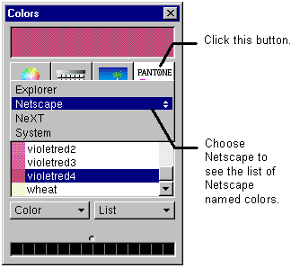

Table of Contents
Table of Contents
 Previous Section
Previous Section
Table of Contents
Previous Section
WebObjects Builder supports Netscape and Internet Explorer named colors. You can use the Colors panel to choose a color from one of these sets, or you can create your own color using the color wheel.
Click the border of a color well.
Click the Pantone button.
Choose a color set from the pop-up list.

 Next Section
Next Section